SpikeRAM 事件驱动脉冲处理器零基础精讲：感知、计算、学习，全在芯片上 SpikeRAM: A 48.1pW/Synapse/Bit Event-Driven Spiking Compute-Near/In-Memory Processor with Neuromorphic Sensor Enabling Life-Long On-Chip Learning（ISSCC 2026 · Paper 18.4）
边缘感知芯片要同时做到高能效、隐私、自适应。SpikeRAM 把这三件事做成一个完整系统：事件相机（EVS）感知 + 脉冲网络（SNN）计算 + 片上在线学习（OCL），并配套三个关键技术：
- 记忆中心的异步近传感器计算：EVS-sCNN 核直接消费 EVS 的异步事件（省帧转换、省搬移、省冗余 MAC）；
- e-OTBP 在线学习算法：单时间步 + 资格迹（ET）训练多层网络，32 时间窗时内存需求 −73.1%；
- 三值梯度 + 格雷码权重：每次权重更新最多翻 1 位 → eNVM 编程次数平均 −89%（NMNIST），MRAM 寿命 +13.9×。
实测：功率密度 48.1 pW/Synapse/Bit、实时处理总功耗 8.28 mW、支持 464M 突触，事件式签名验证 2-shot 学习达 94.3% 精度。
- 事件相机 ≠ 摄像机：传统相机一帧一帧拍整幅图像；EVS 只在“像素亮度变化”时输出一个事件（坐标+时间+极性）。所以它的输出天然稀疏、异步、只有边缘信息——省电还保护隐私（不记录完整图像）。
- SNN 的计算 = 加法：脉冲是 0/1，所以“脉冲 × 权重”不是真乘法，而是“要不要把这个权重加进膜电位”的选择题 → 硬件用移位加法器就行，根本不用乘法器。这是事件驱动计算省电的根本原因。
- 在线学习 ≠ 云端训练：OCL 在设备上就地训练，数据不出芯片（隐私），还能按用户习惯自适应。但代价是反复写非易失存储（eNVM），而 eNVM 写次数有限——所以论文花大力气把“写次数”压下来（三值梯度 + 格雷码）。
§0.1摘要逐句精读
| 原文（摘录） | 人话解释 |
|---|---|
| “an event-based vision sensor (EVS) with asynchronous, sparse and edge-only imaging, offers low power and high privacy” | EVS 事件相机：异步、稀疏、只输出边缘 → 低功耗 + 高隐私。 |
| “on-chip learning (OCL) with emerging non-volatile memories (eNVMs) enables permanent in-situ training without cloud computing” | 用 eNVM 做片上在线学习 → 永久保存训练结果、不上云（隐私）。 |
| “Memory-centric asynchronous near-sensor computing… eliminating frame conversion, reducing data movement and redundant operations” | 方案 1：记忆中心的异步近传感器计算，去掉帧转换与冗余运算。 |
| “Eligibility one-time backpropagation (e-OTBP)… trains a multi-layer network through a single TW and eligibility trace… reducing memory requirements by 73.1%” | 方案 2：e-OTBP 用单时间步 + 资格迹学习，32 TW 时内存需求 −73.1%。 |
| “Ternary gradients with gray-code weights significantly reduce memory programming times” | 方案 3：三值梯度 + 格雷码权重，大幅减少存储编程次数（−89.1%/−88.4%）。 |
| “48.1pW/Synapse/Bit… 464M synapses and 8.28mW power” | 实测：功率密度 48.1 pW/Synapse/Bit，464M 突触，系统功耗 8.28 mW。 |
§0.2论文的核心贡献清单
- 感-存-算-学一体化系统：片上 EVS + sCNN（近存 NMC）+ sFC（存内 CIM）+ OCL（eNVM 学习）——数据以事件形式从传感器流到存储器，几乎零格式转换；
- 全异步事件驱动计算：sCNN PE 用双轨握手（无时钟树），事件到达才激活卷积核、跳过空白区域；
- e-OTBP 单时间步在线学习：内存需求 −73.1%（32 TW），计算/内存开销仅为 BPTT 的 4.3%/3.1%；
- 三值梯度 + 格雷码权重：编程次数 −89.1%（NMNIST）/−88.4%（DVS Gesture），MRAM 寿命 +13.9×；
- 真实世界演示：事件式签名验证（EHSV），2-shot 在线学习 94.3% 精度；NMNIST/DVS/DailyDVS 均 1 epoch 收敛（96.4%/92.9%/90.5%）。
完全零基础：按 01→09 顺序读，重点玩 3 个交互仿真、看 3 个视频，约 60 分钟。这篇是“系统级”论文（不是单个 CIM 宏），读的时候注意它把 NMC、CIM、算法、存储寿命串成了完整故事——这是做系统的人最值得学的写法。
§1背景：EVS 事件相机与 SNN 脉冲网络
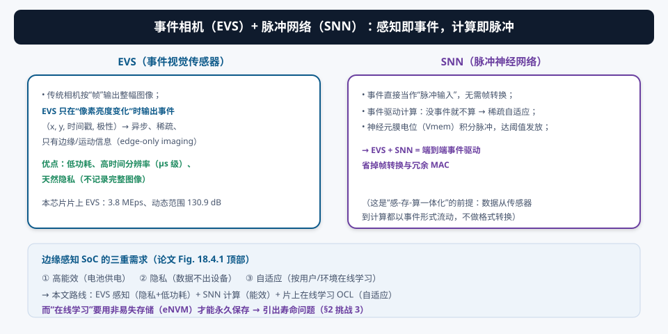
① 能效：EVS 只在变化时输出（稀疏），SNN 只在有事件时计算（事件驱动）→ 静态场景几乎零功耗；② 隐私：EVS 不记录完整图像，只记录变化事件——身份、环境细节天然被“模糊化”；③ 自适应：事件流天然带时间信息（μs 级时间戳），支持时序任务（签名、手势、语音唤醒）。三者正好对应边缘感知 SoC 的三重需求。
本芯片的片上 EVS：事件率 3.8 MEps（百万事件/秒）、动态范围 130.9 dB——动态范围比普通相机高得多（能同时看清亮暗场景）。
§2三大挑战与 SpikeRAM 系统概览
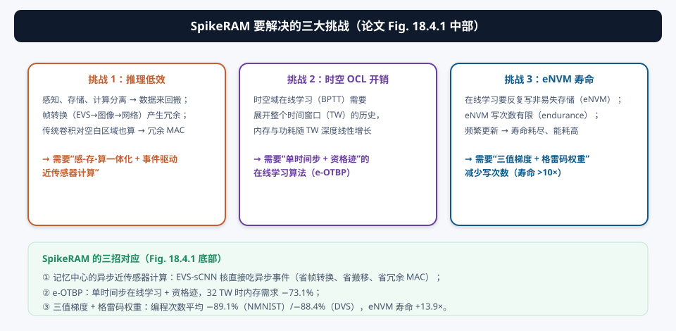
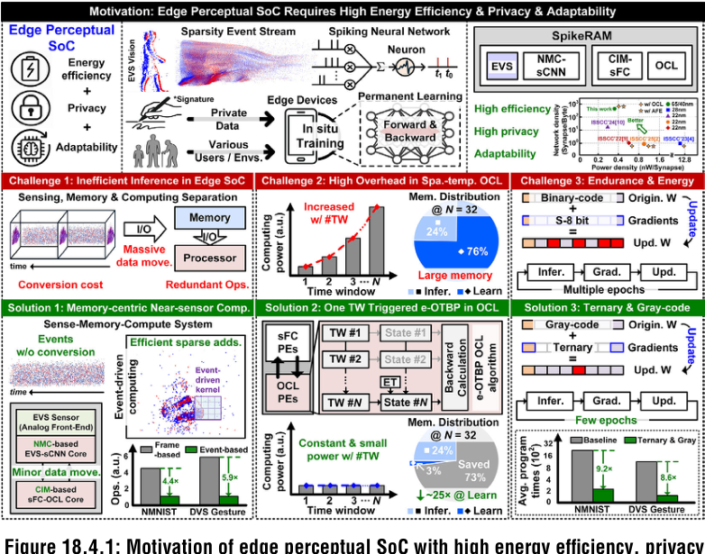
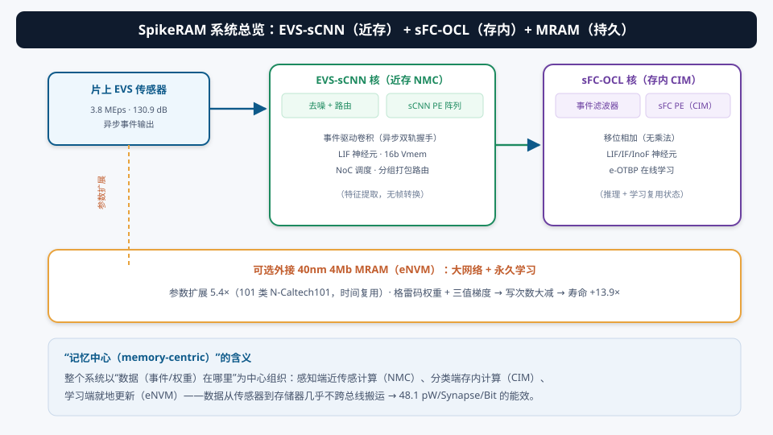
| 挑战 | 本文对策 | 对应章节 |
|---|---|---|
| ① 推理低效 | 记忆中心异步近传感器计算（EVS-sCNN，省帧转换/搬移/冗余） | §4 |
| ② 时空 OCL 开销 | e-OTBP 单时间步在线学习（−73.1% 内存） | §6 |
| ③ eNVM 寿命 | 三值梯度 + 格雷码权重（编程次数 −89%，寿命 +13.9×） | §7 |
§3EVS 事件相机基础（如果第一次接触）
EVS（Event-based Vision Sensor）也叫“事件相机”。它和传统相机的工作方式完全不同：
| 维度 | 传统帧相机 | EVS 事件相机 |
|---|---|---|
| 输出 | 整幅图像（每帧所有像素） | 事件流（只有亮度变化的像素） |
| 时间 | 固定帧率（如 30 fps） | 异步，μs 级时间戳 |
| 数据量 | 大（冗余多） | 稀疏（只在变化时输出） |
| 功耗 | 与场景无关（恒定） | 与活动量成正比（静态≈0） |
| 隐私 | 记录完整图像 | 只记录变化边缘 |
一个事件 =（像素坐标 x, y, 时间戳, 极性 +/−），表示“这个像素的亮度上升/下降超过阈值”。事件流直接就是 SNN 的脉冲输入——这是“感算一体”的物理基础。
片上 EVS：3.8 MEps（每秒产生 380 万个事件——事件率，代表传感器吞吐）和 130.9 dB 动态范围（能分辨的最亮与最暗之比，dB 数越高越好；普通相机约 60~70 dB）。这些数字说明这颗 EVS 足够“快”且“看得广”，能支撑签名笔迹这类高速微小运动。
§4EVS-sCNN 核：记忆中心的异步近传感器计算
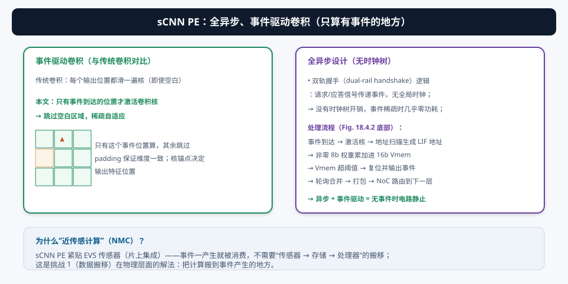
- 近传感（NMC）：sCNN PE 紧贴片上 EVS——事件一产生就被消费，不经过“传感器→存储→处理器”的搬运（挑战 1 的物理解法）；
- 全异步：双轨握手（dual-rail handshake）逻辑传递事件，无全局时钟树 → 省时钟树功耗，且事件稀疏时电路几乎静止；
- 事件驱动卷积：只有事件到达的位置才激活卷积核，跳过空白区域（稀疏自适应）；padding 保证维度一致，核锚点决定输出位置；
- LIF 神经元：地址扫描生成神经元地址，非零 8b 权重累加进 16b Vmem；超阈值则复位并输出事件；事件经轮询合并、打包、NoC 路由到下一层。
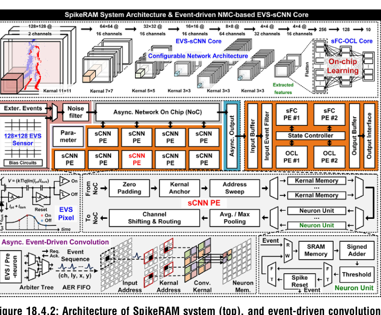
§5sFC-OCL 核：存内计算 + 移位相加（无乘法器）
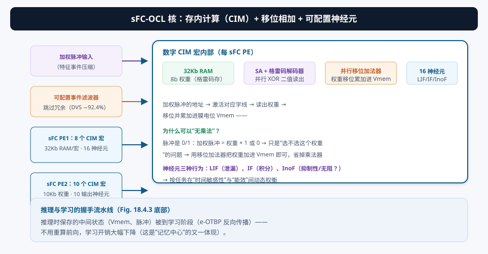
全连接层输出 = Σ(权重 × 输入脉冲)。输入脉冲只有 0 或 1：脉冲=0 时不加，脉冲=1 时把权重加进 Vmem。所以“加权脉冲”的地址直接激活存储器的字线，读出权重、移位累加进膜电位即可——乘法变成了“选通 + 加法”，硬件上就是并行移位加法器。这是事件驱动计算在电路层的最大红利。
- 事件滤波器：利用输入稀疏性，跳过高达 92.4% 的冗余计算（DVS Gesture）；
- CIM 宏：第一级 sFC PE 有 8 个数字 CIM 宏（每宏 32Kb RAM 存 8b 权重 + SA + 格雷码解码器 + 并行移位加法器 + 16 个可配置神经元）；第二级 sFC PE 有 10 个 CIM 宏（10Kb 权重、10 输出神经元）；
- 三种神经元行为：LIF（泄漏）、IF（积分）、InoF（抑制性），按任务在“时间敏感性”与“能效”间动态权衡；
- 推理→学习复用：推理保存的 Vmem/脉冲状态直接用于 e-OTBP 反向传播（握手流水线）。
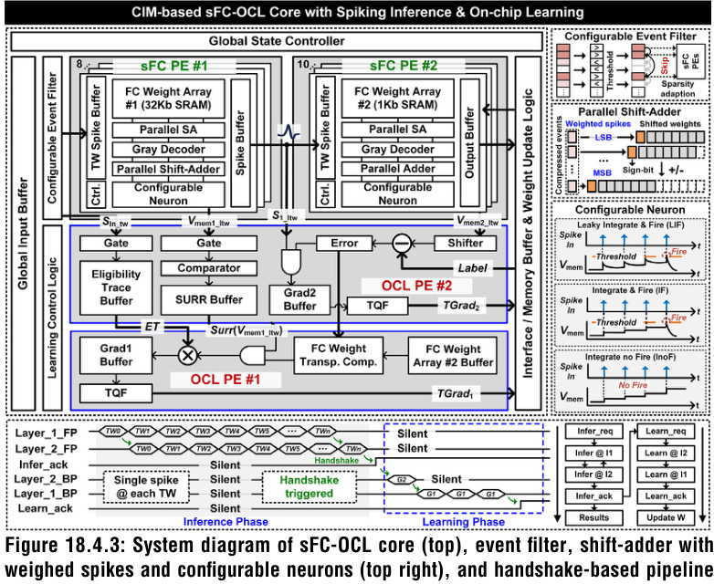
§6创新①：e-OTBP —— 单时间步在线学习
SNN 的在线学习有个经典难题：误差要沿时间和空间两个方向回传。传统 BPTT（Backpropagation Through Time）把整个时间窗口（TW）展开成一张大计算图——TW 越多，内存和功耗越大（挑战 2）。
本文的 e-OTBP（Eligibility One-Time BackPropagation，资格迹一次性反向传播）：
- 单时间步：只在当前 TW 做一次反向传播，不展开历史；
- 资格迹（Eligibility Trace, ET）：把“过去的脉冲贡献”压缩进一条迹（ET 单元 = 循环累加器），梯度与 ET 结合就包含了时序信息；
- 复用推理状态：推理时保留的输出 Vmem、脉冲，学习时直接拿来用，不重算前向；
- 梯度计算：层 2 梯度 = 误差 × 输入脉冲；层 1 梯度 = 误差经“转置权重 + Surr 函数”回传 × ET。Surr（替代梯度）函数二值化后只要 2 个比较器；权重转置用水平加法树复用权重阵列。
32 个 TW 时：内存需求 −73.1%；相对 BPTT 的内存/计算开销仅为 4.3% / 3.1%。配合三值梯度，还能进一步压写次数（§7）。
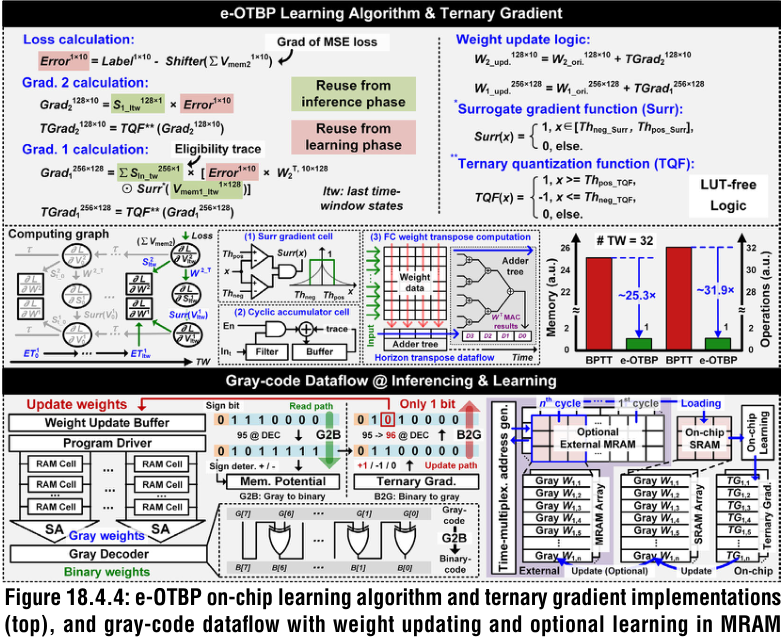
§7创新②：三值梯度 + 格雷码权重 —— eNVM 寿命的救星
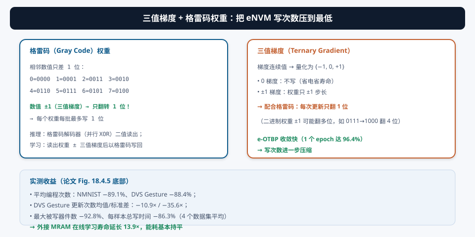
在线学习要反复写 eNVM（MRAM/RRAM），而 eNVM 的写次数有限（endurance）。论文用两个机制把写压力压到最小：
- 三值梯度：梯度量化为 {−1, 0, +1}。梯度为 0 → 不写（省电省寿命）；梯度 ±1 → 权重只 ±1 步长；
- 格雷码权重：权重以格雷码存储（相邻数值只差 1 位）。二进制里 7→8（0111→1000）要翻 4 位；格雷码里相邻只翻 1 位 → 每次更新最多写 1 位。
eNVM 的寿命是按“单器件写次数”算的。权重更新 ±1 时：二进制编码可能让多个位同时翻转（都写一次），格雷码保证只翻 1 位（只写 1 个器件）。加上三值梯度让大部分权重“不写”，总写次数和单器件写压力同时下降——这是“算法（三值化）+ 编码（格雷码）+ 硬件（eNVM）”三层协同的结果。
§8实测与应用：事件式签名验证与芯片成绩单
8.1 演示应用：事件式签名验证（隐私边缘学习）
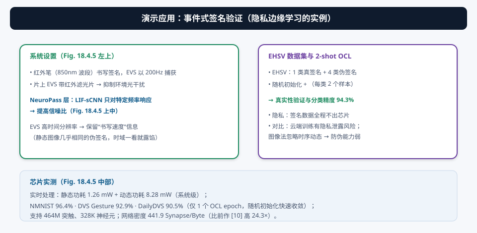
为什么选“签名”做演示？因为签名是私有数据——云端训练有隐私泄露风险；且签名有时序动态（书写速度、笔顺），静态图像法容易放过伪签名。SpikeRAM 用 EVS 捕获时空特征 + SNN 推理 + 2-shot OCL（每类仅 2 个样本、随机初始化），在真实性验证与分类上达到 94.3%——数据全程不出芯片。
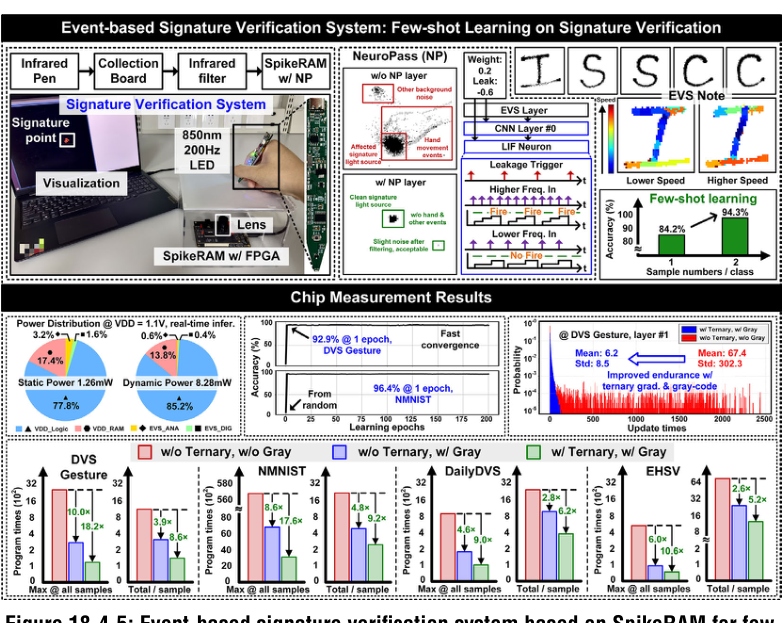
8.2 实测结果与对比
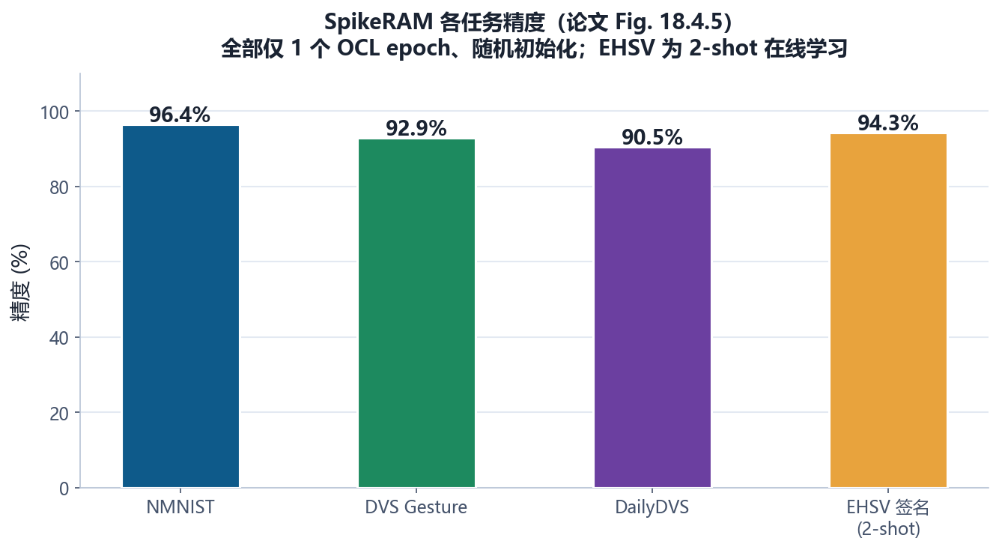
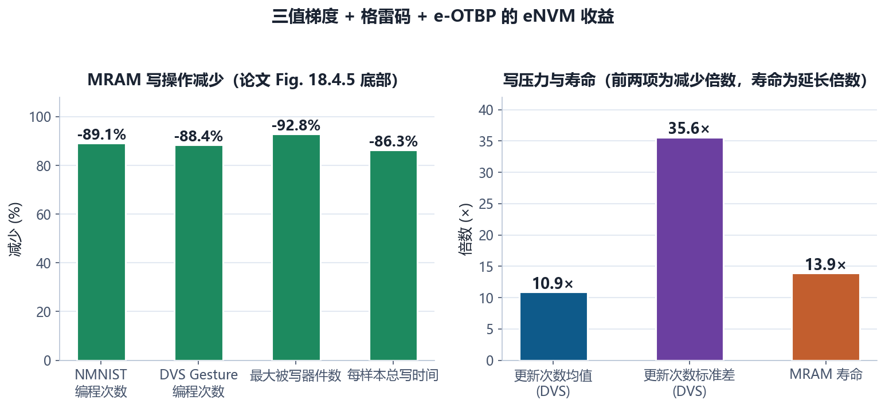
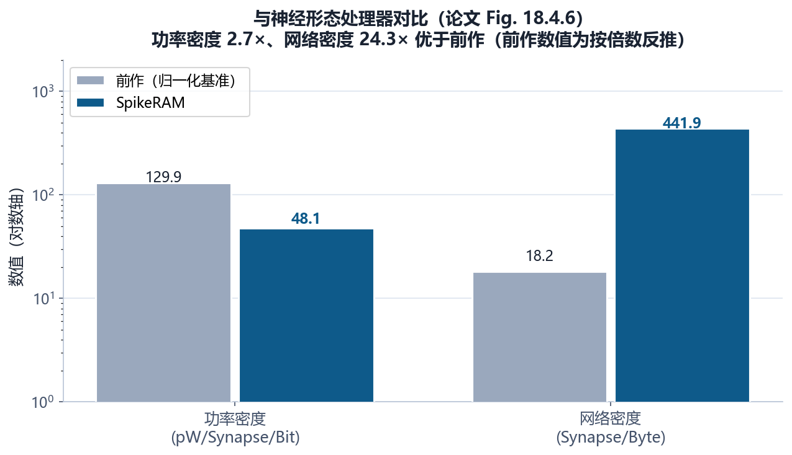
- 系统功耗：静态 1.26 mW + 动态 8.28 mW（实时处理）；
- 规模：464M 突触、328K 神经元；
- eNVM：外接 40nm 4Mb MRAM，参数扩展 5.4×（101 类 N-Caltech101 时间复用），OCL 寿命 +13.9×。
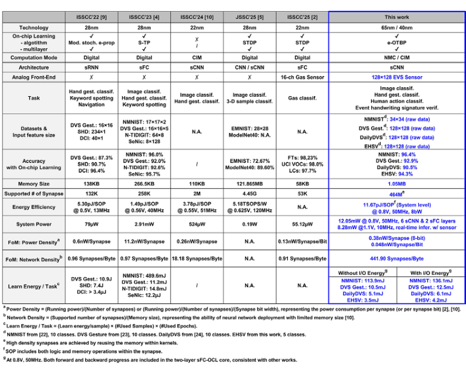
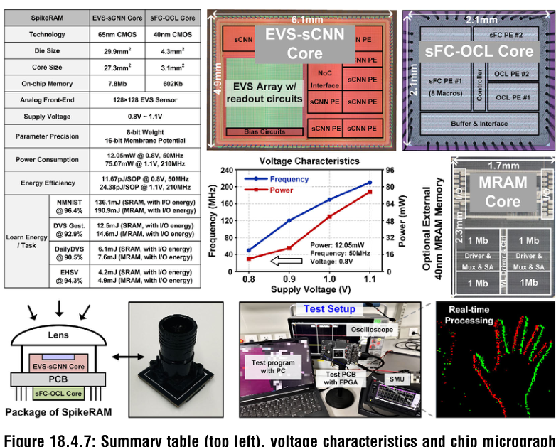
① “pW/Synapse/Bit”这类归一化指标高度依赖“突触/位”的计数口径（是否含 SRAM、权重位宽），跨论文对比要小心；② 精度（96.4% 等）是在特定数据集、特定网络配置下测的，“1 epoch 收敛”依赖 e-OTBP 的初始化与超参，不能外推；③ MRAM 寿命 +13.9× 是在“写压力大幅降低”条件下推算的，实际寿命还受温度、保持时间约束。
§9未来研究方向 · 术语表 · 参考资料
9.1 未来研究方向
- 片上 eNVM 一体化：本文的 eNVM 是“外接 4Mb MRAM”。把 MRAM/RRAM 直接 3D 集成或嵌入 sFC-OCL 核（像 08 号论文的 3D 路线），省掉片间搬运，学习延迟与功耗还能降；
- 终身学习（Life-Long Learning）：论文标题里有“Life-Long”。真正的终身学习要解决“灾难性遗忘”（学新任务忘旧任务）。把 e-OTBP 与弹性权重巩固（EWC）、情景记忆结合，是算法侧的自然延伸；
- 多传感器融合：本文只有视觉 EVS。融合音频事件（片上麦克风事件流）、IMU 事件，SpikeRAM 的“事件驱动”框架可以统一多模态——但 NoC 调度和跨模态同步是难点；
- 更深的网络与更复杂任务：目前是 sCNN + 两层 sFC。扩展到更深网络（ResNet 式 SNN、脉冲 Transformer）需要解决“深层 SNN 的梯度传播与收敛”，e-OTBP 的资格迹框架是很好的起点；
- 安全与隐私深化：签名验证是“数据不出芯片”的好例子。加硬件安全模块（加密、防物理攻击）、把 eNVM 变成“可信执行环境”，能把隐私卖点做成产品壁垒；
- 能耗-精度联合调度：LIF/IF/InoF 三种神经元 + 事件滤波器 + 动态电压频率缩放——做一个“按场景自适应”的运行时调度器（静态场景切 IF 省电、动态场景切 LIF 保精度）；
- 与云端的联邦学习协同：芯片本地 OCL 学到的“个性化模型”可以用差分隐私聚合回云端（联邦学习），兼顾隐私与全局性能。
9.2 术语表
- EVS（Event-based Vision Sensor）
- 事件视觉传感器：只在亮度变化时输出事件（x, y, 时间戳, 极性）。
- 事件（Event）
- 一个像素亮度变化的记录；SNN 的输入脉冲。
- SNN（Spiking Neural Network）
- 脉冲神经网络：0/1 脉冲通信，事件驱动计算。
- OCL（On-Chip Learning）
- 片上在线学习：设备本地训练，数据不出芯片。
- eNVM（Emerging Non-Volatile Memory）
- 新兴非易失存储（MRAM/RRAM 等），写次数有限。
- NMC（Near-Memory Computing）
- 近存计算：计算单元贴近存储/传感器。
- CIM（Compute-in-Memory）
- 存内计算：计算在存储阵列内完成。
- NoC（Network-on-Chip）
- 片上网络：事件路由调度。
- 双轨握手（Dual-Rail Handshake）
- 异步逻辑：请求/应答两线传递事件，无全局时钟。
- Vmem（Membrane Potential）
- 膜电位：神经元累加器（16b），撞阈值发放清零。
- LIF / IF / InoF
- 泄漏积分发放 / 纯积分发放 / 抑制性发放神经元行为。
- 事件滤波器（Event Filter）
- 利用稀疏性跳过冗余计算（DVS Gesture −92.4%）。
- 移位加法器（Shift-adder）
- SNN 全连接的无乘法实现：选通 + 加法。
- TW（Time Window，时间窗）
- SNN 学习的时间展开窗口。
- BPTT（Backprop Through Time）
- 按时间展开的反向传播（内存随 TW 增长）。
- e-OTBP（Eligibility One-Time BackProp）
- 资格迹一次性反向传播：单 TW 学习，内存 −73.1%。
- ET（Eligibility Trace，资格迹）
- 压缩历史贡献的迹（循环累加器实现）。
- Surr（Surrogate）函数
- 替代梯度：二值化后只需 2 个比较器。
- 三值梯度（Ternary Gradient）
- 梯度量化 {−1, 0, +1}：0 不写、±1 一步长。
- 格雷码（Gray Code）
- 相邻数值只差 1 位的编码；±1 更新只翻 1 位。
- NeuroPass 层
- 签名演示中的 LIF-sCNN 带通滤波层（提高信噪比）。
- EHSV 数据集
- 事件式签名验证数据集：1 类真 + 4 类伪。
9.3 参考资料
- H. Fu, Y. Zhou, et al., “SpikeRAM: A 48.1pW/Synapse/Bit Event-Driven Spiking Compute-Near/In-Memory Processor with Neuromorphic Sensor Enabling Life-Long On-Chip Learning,” ISSCC 2026, Paper 18.4. DOI: 10.1109/ISSCC49663.2026.11409002
- P. Lichtsteiner et al., “A 128×128 120 dB 15μs Latency Asynchronous Temporal Contrast Vision Sensor,” IEEE JSSC, vol. 43, no. 2, 2008.（EVS 始祖 [7]）
- D. Huo et al., “A 67μW/Channel, 0.13 nW/Synapse/b Nose-on-a-Chip…,” ISSCC 2025, pp. 350-352.（功率密度对比 [2]）
- J. Zhang et al., “ANP-I: A 28nm 1.5pJ/SOP Asynchronous Spiking Neural Network Processor Enabling Sub-0.1μJ/Sample On-Chip Learning,” ISSCC 2023, pp. 21-23.（异步 SNN 前作 [4]）
- Y. Liu et al., “A 22nm 0.26nW/Synapse Spike-Driven SNN Processing Unit Using Time-Step-First Dataflow and Sparsity-Adaptive In-Memory Computing,” ISSCC 2024, pp. 484-486.（网络密度对比 [10]）
- Y. Zhong et al., “PAICORE: A 1.9-Million-Neuron 5.181-TSOPS/W Digital Neuromorphic Processor With Unified SNN-ANN and On-Chip Learning Paradigm,” IEEE JSSC, vol. 60, no. 2, 2025.（[5]）
- W. Zhang et al., “Edge Learning Using a Fully Integrated Neuro-Inspired Memristor Chip,” Science, vol. 381, 2023.（eNVM 边缘学习 [17]）
- C. Mu et al., “A 28-nm RRAM/SRAM Collaborative CIM Accelerator Supporting RRAM-Endurance-Latency Awareness for Edge Fine-Tuning,” IEEE JSSC, vol. 60, no. 10, 2025.（RRAM 寿命感知 [21]）